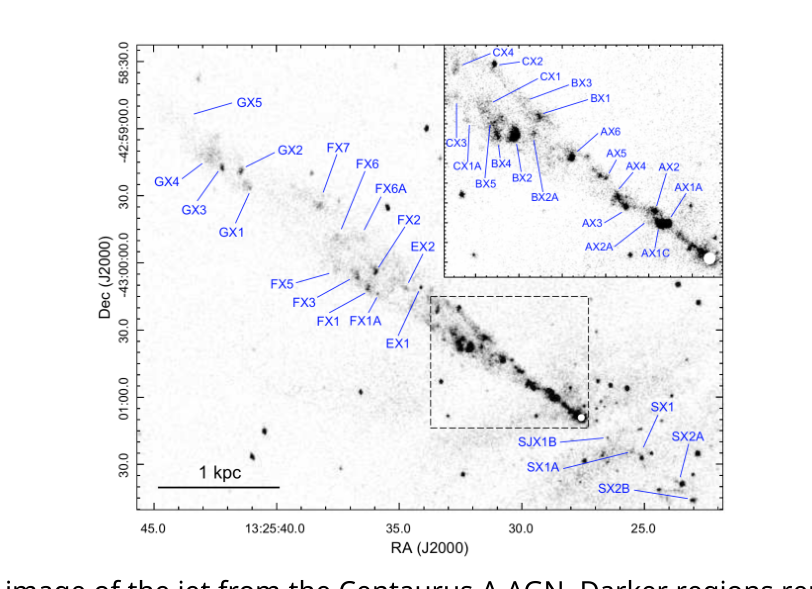
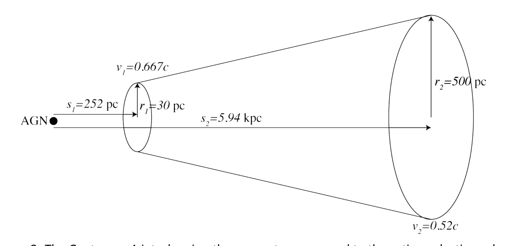
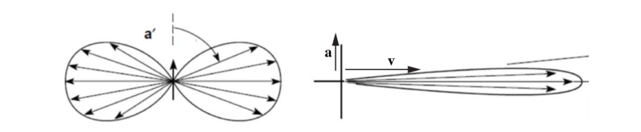

X-ray jets from active galactic nuclei
Introduction
Active galactic nuclei (AGN) are supermassive black holes which form the centres of galaxies, and emit large amounts of energy in radiation and particle flows. One feature of many AGN are jetted outflows, which can be observed through radio emission, and sometimes also in other parts of the electromagnetic spectrum, including x-rays. These jets are large flows of plasma at relativistic speeds, over lengths of order , which is tens of thousands of light years. The x-ray emission from jets is usually dominated by synchrotron emission from relativistic electrons gyrating in the magnetic field of the jet.

Figure 1: X-ray image of the jet from the Centaurus A AGN. Darker regions represent regions of higher intensity x-rays. Brighter regions within the fainter jet are called knots. (Snios et al., 2019)Part A: 1D fluid model of a jet
A simple model of the flow of jets assumes that the flow is steady and directed radially away from the central AGN, so approximately one dimensional, and that the plasma in the jet is in pressure equilibrium with its surroundings. There is assumed to be a constant rate per volume of mass injected into the jet from stars which lose their outer layers as they move through their life cycle.
The jet is described in terms of the coordinate representing distance from the AGN, , and the opening radius of the conical jet. These distances are measured in parsecs, where . The speed of the jet flow is assumed to be directed radially away from the central AGN, and be a function of only. The plasma in the jet is comprised of electrons, protons, and some heavier ionised nuclei. The average energy carried by each particle in the jet, in the reference frame of the bulk flow of the jet (which we will call the jet frame), is , where the term includes all thermal kinetic energy and potential energies in terms of the pressure and is the number density of the plasma.
As the stars, which the jet flows past, move through their life cycles they can lose part of their atmosphere. This results in a uniform rate of injection of mass per unit volume into the jet, and the injected particles are assumed to be at rest relative to the AGN.
This model can be applied to the Centaurus A jet. Centaurus A is one of the nearest AGN, so it is possible to observe its jet at relatively high spatial resolution. The total power carried by the jet is estimated to be . See below for a diagram of a simple geometrical description of the Centaurus A jet, including measurements of some jet parameters. is the coordinate of the start of the jet, and the coordinate of the end of the jet. In Centaurus A the average mass per particle is and . The pressure in the plasma surrounding the jet is , where .

Figure 2: The Centaurus A jet, showing the geometry compared to the active galactic nucleus (AGN). Labelled values: , , , , , .The jet is described by the following parameters, all of which depend on the distance from the AGN:
- the opening radius of the jet in the AGN frame
- the cross sectional area of the jet in the AGN frame
- the speed of the jet in the AGN frame
- the lorentz gamma factor of the jet in the AGN frame
- the number density in the frame of the jet
Any of these parameters can be used in your answers to A1–4.
A.1 Find the number density of particles, , in the frame of the AGN, in terms of the proper number density, and other jet parameters. The proper number density is the number density in the frame which is locally co-moving with the jet plasma outflow, which we will call the jet frame. (0.3pt)
A.2 Find the flux of particles, , across a cross section of the jet with area , at a distance from the AGN. (0.2pt)
A.3 Write a continuity relationship between the particle flux into the jet and out of the jet in terms of the jet parameters at and , and , the total volume of the Centaurus A jet and other required parameters. (0.5pt)
A.4 Write a relationship between the energy flux into the jet, and the energy flux out of the jet in terms of the jet speeds, cross sectional areas and proper number densities at and , the volume, , of the jet and any other required parameters of the Centaurus A jet. (0.6pt)
The power carried by a jet is defined to be the sum of the total bulk kinetic energy flux and the total thermal energy flux, so
P_j(s) = F_E(s) - \dot{M} c^2 \tag{1}
where is the flux of energy through the cross section of the jet at , and is the mass flux through the jet cross section at the same distance from the AGN.
A.5 Using your answers to previous parts find . (0.6pt)
A.6 Find numerical values for the mass fluxes , into the Centaurus A jet at , and also , out of the Centaurus A jet at . (0.4pt)
A.7 Find an expression for the total momentum flux, , into the Centaurus A jet. Also numerically evaluate this expression. (0.5pt)
A.8 Find a numerical value for the total force due to external pressure, , on the Centaurus A jet. (0.5pt)
A.9 Write the expected relationship between and . Also, calculate the percentage difference between the model value of , which you found in A7, and the expected value. (0.2pt)
Part B: Gas of ultra relativistic electrons
Consider a gas of ultra relativistic electrons (), with an isotropic distribution of velocities (does not depend on direction). The proper number density of particles with energies between and is given by , where is the energy per particle. Consider also a wall of area , which is in contact with the gas.
B.1 Write an integral expression for the total energy per volume of the electron gas. (0.2pt)
B.2 Find an expression for the total rate of change in momentum of the gas, in the z-direction which is normal to the wall, due to collisions with the wall. (0.8pt)
B.3 Derive an equation of state for an ultra relativistic electron gas, relating the pressure, volume and total internal energy. (0.6pt)
B.4 Derive a relationship between the pressure and volume of an ultra relativistic electron gas undergoing an adiabatic expansion. (0.6pt)
Part C: Synchrotron emission
In the jets from AGN, we have populations of highly energetic electrons in regions with strong magnetic fields. This creates the conditions for the emission of high fluxes of synchrotron radiation. The electrons are often so highly energetic, that they can be described as ultra relativistic with .
C.1 Find an expression for , the angular frequency of gyration of an electron with lorentz factor and travelling at an angle to the magnetic field . (0.7pt)
As the electron is accelerated due to the magnetic field it emits electromagnetic radiation. In a frame at which the electron is momentarily at rest, there is no preferred direction for the emission of the radiation. Half is emitted in the forward direction, and half in the backward direction. However, in the frame of the observer, for an electron moving at an ultra relativistic speed, with , the radiation is concentrated in a forward cone with (so the total angle of cone is ). As the electron is gyrating around the magnetic field, any observer will only see pulses of radiation as the forward cone sweeps through the line of sight.

Figure 3: The diagram on the left shows the distribution of power in radiation from an electron accelerating up the page in the frame at which the electron in momentarily at rest. The diagram on the right shows the distribution of power in radiation for the same electron in the observer’s frame, where most radiation is emitted in the forward cone. In the observers frame, the direction of the electron’s acceleration is shown by a vector labelled a and the direction of its velocity is shown by a vector labelled v.C.2 Find the duration of a pulse, , of synchrotron radiation observed from an electron with lorentz factor , travelling at an angle to the magnetic field. (0.5pt)
C.3 Hence, estimate the characteristic frequency, , of the synchrotron radiation. (0.3pt)
The total synchrotron power emitted is
P_s = \frac{1}{6\pi\varepsilon_0} \left( \frac{q^4 B^2 \sin^2\phi}{m^4 c^5} \right) E^2 \tag{2}
C.4 Estimate the time, , for an electron of energy to lose its energy through synchrotron cooling. (0.2pt)
Part D: Synchrotron emission from an AGN jet
The distribution of electron energies in a jet from an AGN is typically a power law, of the form , where is the number density of particles with energies between and . The corresponding spectrum of synchrotron emission depends on the electron energy distribution, rather than the spectrum for an individual electron. This spectrum is
j(\nu)\,d\nu \propto B^{(1+p)/2}\,\nu^{(1-p)/2}\,d\nu. \tag{3}
Here is the energy per unit volume emitted as photons with frequencies between and .
Observations of the Centaurus A jet, and other jets, show a knotty structure, with compact regions of brighter emission called knots. Observations of these knots at different times have shown both motion and brightness changes for some knots. Two possible mechanisms for the reductions in brightness are adiabatic expansion of the gas in the knot, and synchrotron cooling of electrons in the gas in knot.
The magnetic field in the plasma in the jets is assumed to be frozen in. Considering an arbitrary volume of plasma, the magnetic flux through the surface bounding it must remain constant, even as the volume containing the plasma changes shape and size.
D.1 For a spherical knot which expands uniformly in all directions from a volume of to a volume , with an initial uniform magnetic field find the magnetic field in the expanded knot. (0.4pt)
D.2 Find , the distribution of electron energies after adiabatic expansion of a spherical knot to a volume on the distribution of electron energy densities, given that the knot of volume has an initial distribution of electrons , where is the number density of particles with energies between and . (1.0pt)
D.3 How will synchrotron cooling affect the distribution of the electrons? After a time interval where electrons have been undergoing synchrotron cooling, will the distribution of electron energies as a function of be steeper, shallower or leave it unchanged. Justify your answer with equations, by considering two electron energies . (0.3pt)
The table below summarises some observations of knots (brighter regions) in jets from two AGN, Centaurus A (Cen A) and M87.
| AGN | Time between observations | Knot | Brightness change in x-rays | Spectral changes in x-rays | Brightness changes in other bands (e.g. UV, optical) |
|---|---|---|---|---|---|
| Cen A | 15 years | AX1C | −23% | No change | No data |
| Cen A | 15 years | BX2 | −15% | No change | No data |
| M87 | 5 years | HST-1 | −73% | No data | No change |
| M87 | 5 years | Knot A | −12% | No data | No change |
(Data from Snios et al., 2019a; 2019b.)
D.4 In the table in the answer sheet, identify the more likely cause of reduced brightness for each knot, and identify which previous part or parts support your conclusion. (0.6pt)
Fonte: Testo (PDF) — p.1
Topic: Astrophysics, Special Relativity, Electromagnetism Metodi: Relativistic Energy-Momentum, Continuity Equation, Conservation Laws, Lorentz Force Analysis Competenze: Mathematical Modeling, Estimation & Approximation, Physical Reasoning Objects: Black Hole, Electron, Photon
Gettati a raggi X provenienti da nuclei galattivi attivi
Introduzione
I nuclei galattivi attivi (AGN) sono buchi neri supermasivi che formano i centri delle galassie e emettono grandi quantità di energia nei flussi di radiazioni e particelle. Una caratteristica di molti AGN sono gli usciti di getto, che possono essere osservati attraverso l’emissione radio, e a volte anche in altre parti dello spettro elettromagnetico, compresi i raggi X. Questi getti sono grandi flussi di plasma a velocità relativistiche, su lunghezze di ordine , che è di decine di migliaia di anni luce. L’emissione di raggi X dei getti è generalmente dominata dall’emissione di sincrotroni da elettroni relativistici che girano nel campo magnetico del jet.
Figura 1: immagine a raggi X del getto dal Centaurus A AGN. Le regioni più scure rappresentano regioni di raggi X di maggiore intensità. Le regioni più luminose all’interno del jet più debole sono chiamate nodi. (Snios et al., 2019)
Parte A: modello fluido 1D di un getto
Un modello semplice del flusso di getti presuppone che il flusso sia costante e diretto radialmente lontano dal centro AGN, quindi approssimativamente a una dimensione, e che il plasma nel jet sia in equilibrio di pressione con il suo ambiente. Si presume che ci sia un tasso costante per volume di massa iniettato nel getto da stelle che perdono i loro strati esterni mentre si muovono attraverso il loro ciclo di vita.
Il getto è descritto in termini di coordinate che rappresentano la distanza dall’AGN, , e il raggio di apertura del getto conico. Queste distanze sono misurate in parsecs, dove . La velocità del flusso di getto è presumibilmente orientata radialmente lontano dal centro AGN e è una funzione di solo. Il plasma nel getto è composto da elettroni, protoni e alcuni nuclei ionizzati più pesanti. L’energia media trasportata da ciascuna particella nel getto, nel quadro di riferimento del flusso di massa del getto (che chiameremo il jet frame), è , dove il termine comprende tutte le energie cinetiche termali e le energie potenziali in termini di pressione e è la densità numerica del plasma.
Mentre le stelle, che il jet passa, si muovono attraverso i loro cicli di vita possono perdere parte della loro atmosfera. Ciò si traduce in un tasso uniforme di iniezione di massa per unità di volume nel getto, e si presume che le particelle iniettate siano in riposo rispetto all’ AGN.
Questo modello può essere applicato al jet Centaurus A. Centaurus A è uno dei più vicini AGN, quindi è possibile osservare il suo getto a una risoluzione spaziale relativamente elevata. La potenza totale trasportata dal getto è stimata a . Si veda di seguito un diagramma di una semplice descrizione geometrica del jet Centaurus A, comprese le misurazioni di alcuni parametri del jet. è la coordinata della partenza del getto e la coordinata della fine del getto. Nel Centauro A la massa media per particella è e . La pressione plasmatica che circonda il getto è , dove .
Figura 2: Il getto Centaurus A, che mostra la geometria rispetto al nucleo galattico attivo (AGN). Valori etichettati: , , , , , .
Il getto è descritto dai seguenti parametri, tutti dipendenti dalla distanza dall’AGN:
- il raggio di apertura del getto nel quadro AGN
- la superficie trasversale del getto nel telaio AGN
- la velocità del getto nel quadro AGN
- il fattore gamma lorentz del getto nel quadro AGN
- la densità di numero nel telaio del getto
Qualsiasi di questi parametri può essere utilizzato nelle risposte a A14.
**A.1 ** Trova la densità di numero delle particelle, , nel quadro dell’AGN, in termini di densità di numero appropriata, e altri parametri di getto. La densità del numero corretta è la densità del numero nel telaio che si muove localmente con il flusso di plasma a getto, che chiameremo il telaio a jet. (0.3pt)
**A.2 ** Trovare il flusso di particelle, , attraverso una sezione trasversale del getto con superficie , a una distanza dal GNA. (0.2pt)
A.3 Scrivere una relazione di continuità tra il flusso di particelle nel jet e fuori dal jet in termini di parametri di jet a e , e , il volume totale del jet Centaurus A e altri parametri richiesti. (0.5pt)
A.4 Scrivere una relazione tra il flusso di energia nel getto e il flusso di energia fuori dal jet in termini di velocità del jet, aree di sezione incrociate e densità di numero appropriato a e , volume, del jet e altri parametri richiesti del jet Centaurus A. (0.6pt)
La potenza trasportata da un getto è definita come la somma del flusso totale di energia cinetica a granellamento e del flusso totale di energia termica, quindi
P_j(s) = F_E(s) - \dot{M} c^2 \tag{1}
dove è il flusso di energia attraverso la sezione trasversale del getto a , e è il flusso di massa attraverso la sezione trasversale del getto alla stessa distanza dall’AGN.
**A.5 ** Usando le risposte alle parti precedenti trovi . (0.6pt)
**A.6 ** Trovare valori numerici per i flussi di massa , nel getto di Centaurus A a , e anche , fuori dal getto di Centaurus A a . (0.4pt)
**A.7 ** Trova un’espressione per il flusso di impulso totale, , nel getto Centaurus A. Valutare numericamente anche questa espressione. (0.5pt)
A.8 Trova un valore numerico per la forza totale dovuta alla pressione esterna, , sul getto Centaurus A. (0.5pt)
A.9 Scrivere la relazione attesa tra e . Calcolare inoltre la differenza percentuale tra il valore del modello di , che si trova in A7, e il valore atteso. (0.2pt)
Parte B: Gas di elettroni ultra relativistici
Considera un gas di elettroni ultra relativistici (), con una distribuzione isotròpica delle velocità (non dipende dalla direzione). La densità di numero appropriata delle particelle con energie tra e è data da , dove è l’energia per particella. Si consideri anche un muro di superficie , che è in contatto con il gas.
**B.1 ** Scrivere un’espressione integrale per l’energia totale per volume del gas elettronico. (0.2pt)
B.2 Trovare un’espressione per il tasso totale di variazione del momento del gas, nella direzione z normale per la parete, a causa di collisioni con la parete. (0.8pt)
**B.3 ** Derivare un’equazione di stato per un gas elettronica ultra relativista, che relaziona la pressione, il volume e l’energia interna totale. (0.6pt)
**B.4 ** Derivare una relazione tra la pressione e il volume di un gas elettronico ultra relativistico che subisce un’espansione adiabatica. (0.6pt)
Parte C: Emissioni di sincrotroni
Nei getti di AGN, abbiamo popolazioni di elettroni altamente energetici in regioni con forti campi magnetici. Ciò crea le condizioni per l’emissione di flussi elevati di radiazioni sincrotroniche. Gli elettroni sono spesso così altamente energetici, che possono essere descritti come ultra relativistici con .
C.1 Trova un’espressione per , la frequenza angolare di rotazione di un elettrone con fattore lorentz e che viaggia ad un angolo verso il campo magnetico . (0.7pt)
Quando l’elettrone viene accelerato a causa del campo magnetico emette radiazioni elettromagnetiche. In un quadro in cui l’elettrone è momentaneamente a riposo, non esiste una direzione preferita per l’emissione della radiazione. La metà viene emessa in direzione anteriore e la metà in direzione anteriore. Tuttavia, nel quadro dell’osservatore, per un elettrone che si muove a velocità ultra relativistica, con , la radiazione è concentrata in un cono anteriore con (così l’angolo totale del cono è ). Mentre l’elettrone gira intorno al campo magnetico, qualsiasi osservatore vedrà solo impulsi di radiazioni mentre il cono anteriore spazza attraverso la linea di visione.
Figure 3: The diagram on the left shows the distribution of power in radiation from an electron accelerating up the page in the frame at which the electron in momentarily at rest. Il diagramma a destra mostra la distribuzione della potenza di radiazione per lo stesso elettrone nel quadro dell’osservatore, dove la maggior parte delle radiazioni viene emessa nel cono anteriore. Nel quadro degli osservatori, la direzione dell’accelerazione dell’elettrone è indicata da un vettore etichettato a e la direzione della sua velocità è indicata da un vettore etichettato v.
**C.2 ** Trova la durata di un impulso, , di radiazione sincrotronico osservato da un elettrone con fattore lorentz , viaggiando ad un angolo verso il campo magnetico. (0.5pt)
**C.3 ** Quindi, stima la frequenza caratteristica, , della radiazione sincrotronico. (0.3pt)
La potenza totale emessa dal sincrotron è
P_s = \frac{1}{6\pi\varepsilon_0} \left( \frac{q^4 B^2 \sin^2\phi}{m^4 c^5} \right) E^2 \tag{2}
**C.4 ** Estimare il tempo, , per un elettrone di energia per perdere la sua energia attraverso il raffreddamento a sincrotrone. (0.2pt)
Parte D: Emissioni di sincrotroni da un getto AGN
La distribuzione delle energie elettroniche in uno scarico da un AGN è tipicamente una legge di potenza, della forma , dove è la densità di numero di particelle con energie tra e . Lo spettro corrispondente di emissioni di sincrotroni dipende dalla distribuzione dell’energia degli elettroni, piuttosto che dallo spettro di un singolo elettrone. Questo spettro è
j(\nu)\,d\nu \propto B^{(1+p)/2}\,\nu^{(1-p)/2}\,d\nu. \tag{3}
Qui è l’energia per unità di volume emessa come fotoni con frequenze tra e .
Le osservazioni del jet Centaurus A e di altri jet mostrano una struttura nodosa, con regioni compatte di emissioni più luminose chiamate nodi. Le osservazioni di questi nodi in tempi diversi hanno mostrato sia il movimento che i cambiamenti di luminosità per alcuni nodi. Due possibili meccanismi per la riduzione della luminosità sono l’espansione adiabatica del gas nel nodo e il raffreddamento sincrotronico degli elettroni nel gas nel nodo.
Si presume che il campo magnetico del plasma dei getti sia congelato. Considerando un volume arbitrario di plasma, il flusso magnetico attraverso la superficie che lo limita deve rimanere costante, anche se il volume contenente il plasma cambia forma e dimensione.
D.1 Per un nodo sferico che si espandono uniformemente in tutte le direzioni da un volume di a un volume di , con un campo magnetico iniziale uniforme , si trova il campo magnetico nel nodo espandito. (0.4pt)
D.2 Trova , la distribuzione delle energie elettroniche dopo l’espansione adiabatica di un nodo sferico a un volume sulla distribuzione delle densità di energia elettronica, dato che il nodo di volume ha una distribuzione iniziale di elettroni , dove è la densità numerica di particelle con energie tra e . (1.0pt)
D.3 How will synchrotron cooling affect the distribution of the electrons? Dopo un intervallo di tempo in cui gli elettroni sono stati sottoposti a raffreddamento a sincrotron, la distribuzione delle energie elettroniche in funzione di sarà più ripida, più bassa o non cambierà. Giustificare la risposta con le equazioni, considerando due energie elettroniche . (0.3pt)
La tabella seguente riassume alcune osservazioni di nodi (regioni più luminose) nei getti di due AGN, Centaurus A (Cen A) e M87.
AgN # Tempo tra le osservazioni # Nodo # Cambiamento di luminosità nei raggi X # Cambiamenti spettrali nei raggi X # Cambiamenti di luminosità in altre bande (ad esempio UV, ottica)
|---|---|---|---|---|---| ♬ CEN A ♬ 15 anni ♬ AX1C ♬ -23% Nessun cambiamento ♬ Nessun dato ♬ CEN A 15 anni BX2 -15% Nessun cambiamento Nessun dato ♬ M87 ♬ 5 anni HST-1 ♬ -73% ♬ Nessun dato ♬ Nessun cambiamento ♬ ♬ M87 ♬ 5 anni ♬ Nodo A ♬ -12% ♬ Nessun dato ♬ Nessun cambiamento ♬
*(Dati di Snios et al., 2019a; 2019b.) *
**D.4 ** Nella tabella della scheda delle risposte, identificare la causa più probabile di riduzione della luminosità per ogni nodo e identificare quale parte o parti precedenti supportano la tua conclusione. (0.6pt)
Fonte: Testo (PDF) — p.1
Topic: Astrophysics, Special Relativity, Electromagnetism Metodi: Relativistic Energy-Momentum, Continuity Equation, Conservation Laws, Lorentz Force Analysis Competenze: Mathematical Modeling, Estimation & Approximation, Physical Reasoning Objects: Black Hole, Electron, Photon